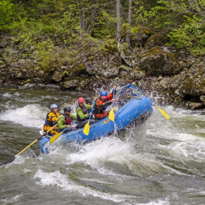

HOME
Zeta's Home Portal Page: The basics of this home page was made within a period of 4 weeks, for a WDD130: Web Fundamentals class. The purpose of this portal page is to showcase the work of Zeta Cruz, a student for this course.

WHITE WATER RAFTING
Example 'White Water Rafting' Website. "Enjoy the breathtaking scenery. From valleys, meadows, canyons, and high peaks; it's way more than just the rapids. It's a great way to get away from it all and relax amongst all the beauty of the great outdoors."
IN-CLASS EXCERCISES
'In-Class Excercises' are exactly what they sound like. Students attending WDD130: Web Fundamentals are occaisionally tasked with various html and CSS excercises, for the purpose of strengthening students' grasp on the subjects. Students are given a time limit of under one hour to complete the excercise.
ABOUT ME
Learn more about this website's developper! Zeta Cruz is a Canadian international student at Brigham Young University: Idaho. She is currently pursuing a biology major (emphasis: bioinformatics) and a minor in computer programming. Outside school and work, Zeta enjoys a wide variety of hobbies, such as reading, gaming, and walking the family dog.